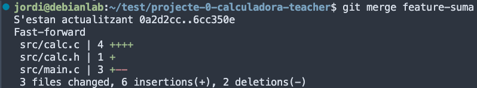

Laboratori 5: Calculadora col·laborativa
Configurant Github
Crea un compte a GitHub: Si no tens un compte a GitHub, visita https://github.com/ i crea un compte gratuït.
Genera un token d’accés personal
- Inicia la sessió al teu compte de GitHub en el navegador web.
- Fes clic a la teva foto de perfil a la cantonada superior dreta i selecciona Configuració al menú desplegable.
- A la pàgina de configuració de GitHub, selecciona Configuració de desenvolupador al menú lateral esquerre.
- A la secció Tokens personals, fes clic a Genera un token personal i selecciona un Token (clássic) per a l’ús amb la línia de comandes.
En aquest punt completa la informació requerida i fes clic a Generar token:
- Introdueix un nom per al teu token.
Token per a la màquina virtual del curs 2526 de Sistemes Operatius
- Selecciona els permisos que necessites per al teu token. Per a la majoria de les operacions bàsiques, com ara clonar repositoris i fer push, necessitaràs almenys els permisos següents:
repo(per accedir als repositoris privats i públics)workflow(per executar workflows de GitHub Actions)write:packages(per pujar paquets a GitHub Packages)
- Selecciona una data de caducitat per al teu token. És recomanable establir una data de caducitat per motius de seguretat.
Pots seleccionar Custom i posar fins al 01/02/2026 on ja haurà acabat el curs.
Configuració de l’accés a GitHub des de la màquina virtual
Inicia una sessió a la terminal de la màquina virtual com a usuari normal.
Configura Git per utilitzar el token de GitHub executant la següent comanda:
git config --global github.token TOKENConsellImportant:Assegura’t de substituir
TOKENpel token d’accés personal que has generat a GitHub. Això emmagatzemarà el token de GitHub en la configuració global de Git al teu sistema Debian.Verifica que el token s’hagi configurat correctament executant:
git config --global --get github.token
Si tot ha anat bé, veuràs el token que has configurat a la sortida d’aquesta comanda.
Github ja no permet l’ús de contrasenyes per a operacions Git que requereixen autenticació. En lloc d’això, has de fer servir un token d’accés personal (PAT) per autenticar-te quan fas operacions com git push o git pull en repositoris remots. Per tant, és important que utilitzis el token d’accés personal que has generat en lloc de la teva contrasenya habitual quan se’t demani autenticació des d’una línia de comandes o des d’un IDE com VSCode.
Tasques
Creació d’equips
Formeu equips de 3 persones. Cada grup haurà d’escollir un líder, que serà el responsable de coordinar el treball, gestionar el repositori i fer el seguiment del projecte.
Trieu un nom d’equip original.
Preparació del projecte
Enllaç de la tasca a GitHub Classroom: https://classroom.github.com/a/bxb1jFbT
El líder de l’equip haurà d’iniciar el grup a través de GitHub Classroom.
Introdueix el nom de l’equip.
Accepta la tasca.
Un cop acceptada la tasca, es crearà un repositori per a l’equip.
La resta de membres s’hi podran unir seleccionant el nom de l’equip al mateix enllaç https://classroom.github.com/a/bxb1jFbT.
El repositori base contindrà el codi inicial necessari i la seva estructura.
El líder és responsable d’assignar les tasques a cada membre mitjançant issues a GitHub.
Per fer-ho:
Fer clic a la pestanya Issues.
Fer clic a New issue, i seleccionar Feature request.
Us he preparat una plantilla per a les issues. Feu clic a Get started.
Omplir el títol i la descripció de la tasca.
Assignar la tasca a un membre de l’equip. Click a Assignees i seleccionar el membre.
Un cop assignada la tasca, fer clic a Submit new issue.
Llista de tasques i assignació:
Tasca Assignat a Implementació de la funció de suma líder Implementació de la funció de resta líder Implementació de la funció de multiplicació membre1 Implementació de la funció de divisió membre1 Implementació de la funció de potència membre2 Implementació de la funció de arrels quadrades membre2
Treball individual
Instal·la el paquet build-essential, que inclou les eines i llibreries necessàries per compilar i construir programes en C. Aquest paquet inclou el compilador GCC, que és comunament utilitzat per programar en C.
apt install build-essential -yCada membre de l’equip haurà de clonar el repositori al seu ordinador i crear una branca
developper les seves tasques.git clone URL_DEL_REPOSITORI cd NOM_DEL_REPOSITORI
Si feu clic a Code al repositori, podreu copiar la URL del repositori.
Tanqueu la sessió de VSCode i torneu-la a obrir però indicant la ruta a la carpeta del projecte. En el meu cas, seria /home/jordi/test/projecte-0-calculadora-teacher. D’aquesta manera, podreu utilitzar les eines de VSCode per a desenvolupar el projecte.
Per cada tasca assignada, el membre haurà de crear una branca amb el nom de la tasca. Per exemple, si la tasca és implementar la funció de suma, la branca es podria anomenar
feature-suma.git checkout -b feature-sumaObserveu que VSCode us mostra la branca actual a la part inferior esquerra.
El codi de la funció suma podria ser:
// calc.c int suma(int a, int b) { return a + b; }// calc.h int suma(int a, int b);Reviseu el fitxer
src/main.cper a cridar la funciósumacorrectament de la llibreriacalc.Compileu el codi i comproveu que funciona correctament.
make ./bin/calc
Si tot funciona correctament, el codi s’executarà i mostrarà el resultat de la suma.
Un cop finalitzada la tasca, fer un
commitamb els canvis realitzats indicant la tasca realitzada. Teniu dos opcions per fer elcommit:- Amb les eines de VSCode: Feu clic a la icona de la branca a la part inferior esquerra i seleccioneu Commit. Després, introduïu el missatge de commit i confirmeu-lo.
Amb la terminal.
git add src/calc.c src/calc.h src/main.c git commit -m "@feat: Implementació de la funció de suma"
Si no feu git add abans de fer el commit, no es pujaran els canvis al repositori. Així que assegureu-vos de fer git add abans de fer el commit.
Utilitza els missatges de commit per tancar les issues relacionades amb la tasca. Per exemple, si la tasca és implementar la funció de suma, el missatge de commit podria ser: git commit -m "@feat: Implementació de la funció de suma. Closes #1". Si la tasca 1 és la implementació de la funció de suma.
Repeteix els passos 2 i 3 per a cada tasca assignada. Sempre creant la branca des de main. Per tornar a la branca main, feu git checkout main. O bé, click a la branca a la part inferior esquerra de VSCode i seleccioneu main. Un cop finalitzades les seves tasques ajuntarem totes les branques a la nostra branca local main.
git checkout -b main
git merge feature-suma 
Si hi ha conflictes, caldrà resoldre’ls abans de fer el commit.
- Per fer-ho amb VSCode, farem clic a la icona de la branca a la part inferior esquerra i seleccionarem Merge branch into current.
- Seleccioneu la branca a ajuntar.
- Quan integreu la segona funcionalitat (resta, multiplicació, etc.), caldrà fer un
mergeja que es detectaran conflictes. - Un dels conflictes es el fitxer
calc.c. Cada branca ha modificat aquest fitxer i caldrà resoldre els conflictes. Acceptant els canvis de les dues branques. Podeu fer-ho manualment o amb el resolutor de conflictes de VSCode. - Repetiu el mateix procediment per tots els conflictes que apareguin.
- Un cop resolts els conflictes, feu un
commitamb el missatge@feat: Merge branch feature-resta.
En aquest punt, cada membre de l’equip haurà de tenir implementades les seves tasques (resta, multiplicació, divisió, potència i arrels quadrades), per poder després ajuntar-les a la branca main. Es important editar els fitxers calc.c i calc.h i també el fitxer main.c per a cridar les funcions correctament.
Ajuntar les tasques
Un cop totes les tasques estiguin implementades i ajuntades a la branca
main, caldrà testar que el codi funciona correctament.Aquestes tasques estaràn en la branca
maindel repositori local. Ara caldrà pujar aquestes tasques al repositori remot.- Crea a GitHub una branca remota anomenada
develop-<nom-usuari>i la vincularem amb la brancamainlocal.
Primer, caldrà actualitzar les branques remotes del repositori.
git fetch originUn cop actualitzades les branques remotes, caldrà fer un
pushde la brancamaina la brancadevelop-<nom-usuari>.git push origin main:develop-<nom-usuari>- Crea a GitHub una branca remota anomenada
Un cop pujades totes les tasques al repositori remot, el líder actualitzarà les branques remotes de tots els membres de l’equip.
git fetch originFara un
mergede totes les tasques a la seva brancamain.Finalment, testeu que el codi funciona correctament.
Un cop testejat, caldrà pujar la branca
mainal repositori remot.git push origin main
Documentació
- Editeu el fitxer
README.mdi afegiu una breu descripció del projecte, el nom dels membres de l’equip i una captura de pantalla de la calculadora en funcionament. - Afegiu també les instruccions per a compilar i executar el projecte.
Podeu consultar la documentació de GitHub sobre com escriure aquest tipus de documents https://docs.github.com/en/github/writing-on-github/basic-writing-and-formatting-syntax.
Exercici Extra (opcional)
Podeu intentar superar els nivells del joc Learn Git Branching per practicar més les vostres habilitats amb Git. Centreu-vos en els exercicis REMOTE.